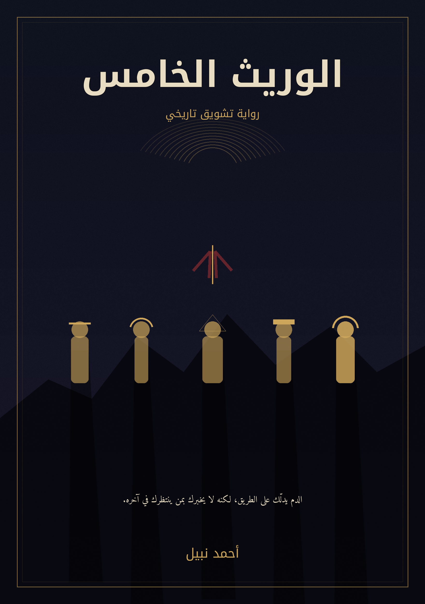

نهاية الفصل
الوريث الخامسالاستهلال
◉

تجربة قراءة روائية تفاعلية
رواية تشويق تاريخي
«الدم يدلّك على الطريق، لكنه لا يخبرك بمن ينتظرك في آخره.»
خمسة أزمنة. علامة واحدة. وسلالة لم تعرف أن أحدًا كان ينتظر ظهور وريثها الأخير.